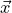
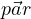

, )
, )Le notazioni utilizzate in questo schema sono  per rappresntare un generico array x, dim indica sempre una dimensione, xCode indica un codice di root inerente a x, opt indica sempre la stringa di caratteri che ROOT interpreta come opzioni, i indica un indice (o una quantitá indicizzabile), n indica sempre un intero.
Dichiarazione di un istogramma 1D
Fill(x) o Fill(x, noccorrenze) fill del bin x
Draw("opt") per disegnare il grafico (E-barre errore, P-solo punti, SAME-sul grafico precedente)
GetMean()
GetMeanError()
GetRMS() radice della varianza
GetRMSError()
GetMaximum() o GetMinimum()
GetEntries() numero di ingressi inseriti
Integral() come GetEntries ma non tiene conto dei pesi assegnati
Integral(bin1, bin2) integrale tra bin1 e bin2
GetIntegral() l’array dei conteggi cumulativi
Sumw2() imposta la somma in quadratura degli errori
Metodi dei bin:
GetMaximumBin() indice del bin contenente il valore massimo
GetBinCenter(ibin) centro del bin
GetBinContent(ibin) numero di elementi contenuti nel bin
GetBinContent(0) numero di UNDERFLOW
GetBinContent(nbin+1) numero di OVERFLOW
GetBinError(ibin)
SetBinContent(ibin, val) in y prende il valore val
Estetica:
SetMarkerStyle(markerCode)
SetMarkerSize(dim) setta la dimensione del marker a dim
SetFillColor(colorCode)
SetLineColor(colorCode)
GetXaxis()->SetTitle("name") setta il titolo dell’asse x (analogo per y)
GetYaxis()->SetTitleOffset(dim) offset del titolo
GetYaxis()->SetTitleSize(dim) dimensione carattere titolo
SetLineWidth(dim) spessore linea
Operazioni (sia h1 un istogramma):
n*h1 prodotto per lo scalare n
Divide(const *h1, const *h2, c1, c2, "opt") esegue la divisione (c1*h1)/(c2*h2). Di solito si richiede l’opzione "B"
Add(const *h1, const *h2, c1, c2, "opt") esegue la somma c1*h1+c2*h2
, )da file TGraphErrors(n, x, y, ex, ey) grafico con barre errore TGraphErrors(filename, format="%lg %lg %lg %lg", "opt")
Draw("opt") metodo per disegnare (A-disegna gli assi, P-disegna il marker dei punti, E-disegna barre errore)
SetPoint(i, x, y) inserisce il punto (x,y) nella posizione i
GetPoint(i, x, y) assegna alle variabili (x,y) i valori del punto i
GetX() returna  (analogo per y)
(analogo per y)
GetN() returna il numero dei punti
Integral() returna l’area sotto il grafico
GetCorrelationFactor()
GetCovariance()
Estetica:
SetTitle("title", "titleXaxis", "titleYaxis")
SetMarkerStyle(markerCode)
SetMarkerColor(colorCode)
SetLineColor(colorCode)
SetFillColor(colorCode)
nella funzione i parametri vanno indicati con [i]
NB: per funzioni definite a tratti, siano f(x) e g(x) funzioni generiche
"function" = "f(x)*(x>=a && x<b) + g(x)*(x>=b && x<c) + ..."
Draw()
SetParameter(i, value) setta il valore value al parametro iesimo
SetParameters(value1, value2, ..., valuen) setta il valore value i al parametro i
SetParLimits(i, xmin, xmax) definisce il range del parametro i
Eval(x) returna f(x)
Integral(a, b) integrale della funzione nel range [a,b]
DrawDerivative() grafica la derivata prima
DrawIntegral() grafica l’integrale
Derivative(x) o Derivative2(x) o Derivative3(x) calcola derivate
Metodo Fit("name", "opt") valido per piú classi. Funzioni predefinite "gaus" "expo" "poln" OptFit:
"R": usa il range della funzione (di default usa il range dell’istogramma)
"L": usa il metodo della massima verosimiglianza (default con chi-quadro)
"Q": stampa il minimo necessario dei risultati del fit
"V": stampa tutto quello che riesce dei risultati del fit
"S": ritorna risultati utili del fit
Metodi:
gStyle->SetOptFit(optCode) visualizza le info del fit
GetFunction(“f”) restituisce la funzione utilizzata nel fit (va utilizzata su un oggetto fittato)
GetChisquare()
GetNDF()
GetParameter(i) valore del parametro i-esimo
GetParError(i)
GetParameters() mette in  i parametri
GetParErrors()
GetCorrelationMatrix() stampabile tramite Print()
GetCovarianceMatrix() stampabile tramite Print()
per inizializzare la generazione Distribuzioni predefinite:
Uniform(a, b) uniforme in [a, b]
Rndm() uniforme in [0, 1]
Gaus(μ, σ)
Poisson(μ)
Binomial(ntot, prob)
Exp(τ) esponenziale decrescente
Integer(i) uniforme intera in [0, i-1]
Landau(moda, σ)
f1->GetRandom() genera un valore casuale dalla funzione f1
FillRandom("name", n) filla l’oggetto con n elementi della funzione "name"
Divide(i, j) divide la canvas in i*j pad
cd(i) seleziona la pad i
Print("name.extension") stampa la canvas su file
SetFillColor(n)
AddEntry(obj, "description") associa a obj una linea con descrizione
Draw("SAME") disegna la legenda sullo stesso grafico
Add(obj) con obj qualunque oggetto di root (TH1F, TF1, ...)
At(i) returna l’elemento i-esimo della lista. NB: returna sempre un TObject, al momento dell’utilizzo specificarne il tipo con un static_cast<type>
Print() stampa a schermo la lista
At(i)->InheritsFrom("type") restituisce 1 se l’elemento i-esimo é di tipo type, 0 altrimenti
Options:
NEW o CREATE crea un nuovo file aperto in lettura, se giá esiste non si apre
RECREATE come CREATE ma se il file esiste lo sovrascrive
UPDATE apre un file esistente in scrittura, se non esiste lo crea
READ apre un file esistente in lettura (default)
Metodi:
TObject->Write() scrive sul file il TObject
Get("name") returna l’oggetto salvato di nome "name"
Close() chiude il file. Fondamentale inserirlo per evitare problemi
Metodi:
gBenchmark->Start("name") inizia un processo "name"
gBenchmark->Print("name") stampa le tempistiche in quel momento
gBenchmark->Show("name") interrompe il processo e ne stampa le tempistiche
gBenchmark->Stop("name") interrompe il processo "name"
ifstream in;
in.open("maxwell.dat"); //nome del file
Float_t x,y;
while (1) {
in >> x >> y;
if (!in.good()) break;
h1->Fill(y);
}
in.close();
In "MyClass.h"
Mettere inheritance: public TObject
Chiamare macro in fondo (prima della chiusura delle parentesi: ClassDef(MyClass, 1))
class MyClass: public TObject {
...
ClassDef(MyClass, 1) //rende la classe scrivibile sul file ROOT
};
In "MyClass.cxx"
Chiamare macro in fondo: ClassImp(MyClass)
Se hai fatto questo poi per scriverla sul file: //con A oggetto di MyClass
1) TFile *file = new TFile("test.root","recreate");
2) A.Write("A");
3) file->Close();
NB: per usare una classe esterna da ROOT:
gROOT->LoadMacro("MyClass.cxx++"); //compiling MyClass
for(Int_t i=0;i<nGen;i++){
h[0]->Fill(gRandom->Gaus(fixedValue, res));
}
for(Int_t i=0;i<nGen;i++){
h[1]->Fill(gRandom->Gaus(distribution, res));
}
(efficenza del 70%)
x=gRandom->Gaus(mean, sigma);
y=gRandom->Rndm();
if(y<0.7){h1->Fill(x)}
TF1 *eff = new TF1(“eff”, "function", min, max);
x=gRandom->Gaus(mean, sigma);
y=gRandom->Rndm();
if(y < eff->Eval(x)) {
h1->Fill(x)
}
TH1F *hEff=new Th1F(*hTot); //hTot istogramma con tutte le x(non solo quelle scartate) hEff->Divide(h1, hTot, 1, 1, “B”); //h1 istogramma con solo le x accettate
.L macro.cpp oppure root [0] gROOT->LoadMacro(“macro.cpp”) macro() [per eseguire]
g++ -o ExampleMacro .exe macro.cpp ‘root-config --cflags --libs‘ ./macro.exe [per eseguire] //IMPORTANTE: la macro deve contenere un main()